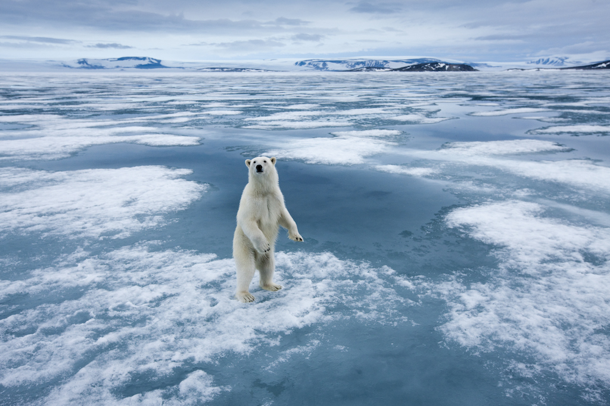

Crisis en Ubisoft
Ubisoft está atravesando una crisis significativa. La empresa ha cerrado varias oficinas en Europa, incluyendo su oficina de ventas en España, como parte de una reestructuración. Además, ha cancelado varios juegos y ha enfrentado problemas financieros, con una caída en el valor de sus acciones. Los problemas se deben a varios factores, incluyendo bajas ventas, críticas negativas de algunos juegos recientes, y un intento fallido de convertir todos sus productos en juegos como servicio. Además, la empresa ha estado lidiando con acusaciones de acoso y discriminación, lo que ha llevado a un cambio cultural interno.
Leer mas
Nuevas funciones de WhatsApp
WhatsApp ha lanzado varias nuevas funciones para mejorar la experiencia del usuario. Entre las actualizaciones más destacadas se encuentra la capacidad de editar mensajes enviados, lo que permite corregir errores sin necesidad de eliminar el mensaje completo. También se ha añadido la opción de enviar fotos y videos en alta resolución, lo que mejora la calidad de los archivos multimedia compartidos. Estas actualizaciones buscan mantener a WhatsApp competitivo frente a otras aplicaciones de mensajería.
Leer mas
Avances en la inteligencia artificial
Investigadores han desarrollado una nueva inteligencia artificial capaz de diagnosticar enfermedades raras con una precisión sin precedentes. Este avance podría revolucionar el campo de la medicina, permitiendo diagnósticos más rápidos y precisos, lo que es crucial para el tratamiento temprano de estas enfermedades. La IA utiliza algoritmos avanzados y grandes cantidades de datos para identificar patrones que los médicos humanos podrían pasar por alto.
Leer mas
Cambio climático y sus efectos:

Un nuevo estudio ha revelado que el cambio climático está acelerando el derretimiento de los glaciares a un ritmo alarmante. Este fenómeno podría tener consecuencias devastadoras para las comunidades costeras y la biodiversidad global. El derretimiento de los glaciares contribuye al aumento del nivel del mar, lo que pone en riesgo a millones de personas que viven en áreas costeras. Además, la pérdida de glaciares afecta a los ecosistemas que dependen de ellos.
leer mas